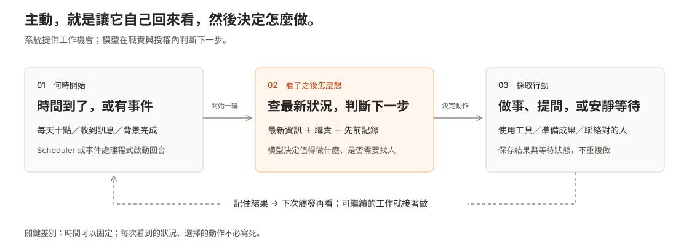

主動工作：從觸發、判斷到行動
兩版使用相同情境與比較主線：README 適合順讀、搜尋與 review；HTML 可以切換 framework，展開原本的故事動畫、流程圖與程式片段。更新：2026-09-11（同事感、OpenClaw commitments 退役與 Grok Bot 補查；其餘框架維持原固定版本）。
先看高層概念
時間到了／有事件 → 查看狀況與記憶 → 在職責內判斷 → 做事、提問或等待 → 保存結果、接續。
排程可以固定，具體動作不必寫死。time／event 足夠描述本專案的喚醒來源；已在執行的 loop 可以直接下一步。framework 的進階能力主要在省成本、判斷、記憶與可靠接續，不是新增一種無來源的念頭。

- 給決策者：互動概念與三種結果。
- 給設計者：觸發與進階機制詳細查核。
- 另一條主線：同事互動感，研究接話、修正、群組發言與交接。
- 歷史補正：OpenClaw inferred commitments 已退役；工作閉環共用設計。
以下展開原本的七框架比較；保留各來源版本與證據限制。
1. 從一天的工作開始
「上班時間幫我留意 Outlook。客戶來信有需要我處理的事情，再提醒我。」
下一次查看時，同事讀到客戶要求今天回覆的信，查相關資料，準備附原信連結的私人提醒。沒有需要注意的事，就不打擾。
接著情境變複雜：昨天 Alex 答應今天提供檔案，現在還找不到完成證據；查資料的背景工作還沒結束；目前工作告一段落後，是否有下一件值得做的事？這些問題共同構成原本的 proactive 故事。
這是比較情境，假設已接好 Outlook／來源工具與權限；不表示每個 framework 都原生支援這個完整流程。Minecraft 與程式庫維護則保留各自的原生情境，不硬套成郵件功能。
2. 用同一組問題看實作
| 問題 | 要找的機制 | 不宜混在一起的概念 |
|---|---|---|
| 何時開始？ | Timer、event、completion、init 後的 loop | 喚醒時機與工作價值 |
| 看見什麼？ | Context、來源 tools、monitor baseline、成敗紀錄 | 已取得的觀察與模型猜測 |
| 為什麼先做它？ | 硬規則、prompt 順序、LLM 取捨、queue priority | 執行通道順序與業務目標排序 |
| 如何執行？ | Tools、程式、Bot 派工與結果回送 | 派送成功與成果正確 |
| 下一輪呢？ | 排程、結果事件、goal judge、curriculum feedback | 續跑既定工作與產生新目標 |
「不用人催就會查看與判斷」可以從時間 trigger 做起。 但 timer 本身不決定看什麼、是否有必要行動或先做哪件事。下面比較的是每個 framework 如何把這些部分接起來；五個問題不是強制共用的 runtime pipeline。
3. 七個 framework 的故事與實作
OpenClaw
2026-09-11 補查：舊 inferred commitments 已移除；現行 Automations／Heartbeat／memory 不等於內建承諾追蹤器。版本查核
上班時間留意客戶來信，需要今天回覆時提醒我。
流程： Heartbeat / Automations 或事件喚醒 → 讀職責與來源 → LLM 判斷是否需處理 → Tools 查資料／準備提醒 → 保存狀態，等待下次
- 觀察： 模型在回合中透過已接好的工具取得來源；Heartbeat 本身不是 Outlook 訂閱。
- Prioritization： 依設定職責與 context 判斷要不要處理／通知。Heartbeat 路徑本身未證明具備跨責任候選池或業務分數排序。
- 接續： 排程或事件提供下一次回合；沒事時依靜默規則不通知。多種入口可接到自動化執行。
- 證據範圍： 預設 Heartbeat 不從舊聊天推導任務。若要追承諾，需設定職責、來源與動作授權。
Hermes
持續看這份資料；有變化才分析。分析目標未完成時接著做。
流程： Cron monitor 讀 script / URL → 比對上次結果 → 首次或有變化才喚醒模型 → 按指令分析 → 交付；另由 /goal 判斷目標續跑
- 觀察： Monitor 可先取得來源內容、保存 baseline 並比對，避免每次都呼叫模型。/loop 與 /goal 是不同機制。
- Prioritization： Monitor 決定是否需要跑；goal judge 決定既定目標是否繼續。這些不等同多目標 ranking。Self-paced loop 依正規化文字 hash 調間隔，也不是學習式注意力。
- 接續： Cron 到期再查；/goal 可 continue、wait 或 stop，受 gates 與限制約束。
- 證據範圍： Self-paced 的文字比對可能忽略數值差異；judge 也不必然直接驗證成果。不能把少跑或續跑當成業務排序。
OpenBot
每天整理進度；需要專家 Bot 時派工，拿到結果後回到原對話。
流程： Routine 到期 → 持久 queue → claim / lease → Bot 執行 → 必要時 message_bot 派工 → 成果 relay 回原對話
- 觀察： Routine 保存 instruction 與執行脈絡；資料由 Bot 的工具取得。收到派工時帶入 task、constraints、expected result。
- Prioritization： 到期與租約條件控制工作是否可被領取；模型選獲准的協作 Bot。這是 eligibility 與派工，不足以證明依業務價值排名。
- 接續： 排程產生下一次 occurrence；派工成果經 relay 送回。Lease heartbeat 用於維持工作所有權。
- 證據範圍： Heartbeat 不是好奇心。Queue 接受工作不代表模型完成，更不代表成果正確。
Grok Bot · official product + reconstruction
官方產品頁明確描述接回舊對話、跟進交接、從示範學 routine；以下實作流程仍來自非官方重建，並未驗證與官方二進位一致。官方產品頁
背景工作完成，或新的 automation 事件到了，就接回原本等待的工作。
流程： 消費 automation fire / 收到背景 completion → 組合事件與結果 → 加入執行佇列 → 模型接續 → 回報有用成果或保持安靜
- 觀察與持續需求： 事件與背景結果成為新回合 context；initiative prompt 依觀察提出下一步。routine prompt 鼓勵辨識隱含持續需求，明確時建立後續工作；這是模型政策，不是保證每次都辨識正確。
- 工作與回報： 背景 wake 可先安靜工作，有價值才 SendMessage；使用者已在等的成果則必須交付。
- Prioritization： RunScheduler 明確讓 queued user tasks 優先於 agent/background tasks。這是執行通道優先序；回合內值得做什麼仍靠 prompt 與模型，未證明全域業務效用排名。
- 接續： Completion revival 接回等待對話；goal continuation 有 handler，但既有查核未建立每回合自動產生下一次 action 的完整鏈。
- 證據範圍： 來源是非官方重建；不能直接當成原產品或雲端控制器的完整行為證明。
Codex
這個目標還沒完成，不用等我再次說「繼續」。
流程： 明確設定 /goal → 執行一回合 → thread 閒置時讀取有效目標 → 符合條件則啟動下一回合 → 完成或符合停止條件
- 觀察： 續跑讀既有 goal 與對話脈絡；外部狀態仍要靠已設定工具查取。App 排程是另外一層入口。
- Prioritization： 已查核 goal 路徑是在同一目標內選下一步，不是跨目標候選排序器。
- 接續： 有效 goal 的 idle continuation 讓工作接續。具體停止與預算條件依已查核版本／執行設定。
- 證據範圍： /goal 不會單獨建立「讀郵件、發現承諾、選人追問」整套流程。
Claude Code
目前程式庫還有什麼值得處理？在既有工作範圍內持續維護。
流程： 啟動 bare /loop → 讀目前工作與 repository → 按維護指引選任務 → 執行 → 選下次間隔，再次喚醒
- 觀察： 利用目前工作、PR 與 repository 脈絡；Monitor、channels、本機排程與 cloud routines 各有不同路徑。
- Prioritization： 官方 bare /loop 指引依序關注未完成工作、目前 PR，再找 bug／簡化。這是明訂在指引中的順序，由模型具體判斷，不是已證明的數值效用排序器。
- 接續： 模型可決定動態查看間隔，排程再喚起下一回合；各模式存活範圍不同。2026-09-11 官方
/goal文件另描述每輪後由小模型評估完成條件，未完成再接續；詳見 本次補查。 - 證據範圍： 維護範圍不等於任意新計畫，也不等於原生 Outlook 工作流程。
Voyager
在 Minecraft 裡，根據目前環境與能力，下一件值得探索的事是什麼？
流程： Init / learn loop → 讀遊戲狀態與成敗 → 起始／背包硬規則或 LLM 選 Task → 執行與 critic 回饋 → 成功技能存庫 → 再選任務
- 觀察： 把環境、背包、裝備與完成／失敗任務提供給 curriculum；不是讓 LLM 無來源地猜世界。
- Prioritization： 硬規則先行；一般路徑以新穎、難度可行、資源需求指引 LLM，直接輸出一個 Task。沒有明訂權重、候選排名或學習中的 priority predictor。
- 接續： 執行結果更新歷史，成功程式可進 skill library；outer loop 再提下一個目標。
- 證據範圍： 本質上就是 context + LLM + feedback loop。能力累積不等於更新模型權重，也未證明主觀慾望。
4. 放在一起看，差異在哪裡？
| Framework／路徑 | 主要 proactive 機制 | 如何選擇／排序 | 結果如何影響下一輪 |
|---|---|---|---|
| OpenClaw Heartbeat / Automations | 排程與事件喚醒設定職責 | 職責 prompt + LLM 判斷 | 狀態、context 與下次喚醒 |
| Hermes monitor / goal | 變化前置比對、judge 續跑 | 是否需要跑／是否繼續；非同一個 ranking 問題 | Baseline、goal 狀態；self-paced 另用 hash 調間隔 |
| OpenBot routines / handoff | 持久 queue、租約、Bot 派工／relay | 到期與 claim eligibility、模型選協作者 | 下次 occurrence 或派工成果回送 |
| Grok reconstruction | Automation fire 與 completion revival | User queue 優先於 agent/background；回合內由模型取捨 | 背景成果成為下一回合 context |
| Codex /goal | Active goal 的 idle continuation | 既定目標內的下一步 | 保存目標狀態，符合條件再接續 |
| Claude Code bare /loop | 維護職責 + 動態排程 | 指引順序：未完成工作 → PR → bug／簡化 | 工作脈絡與下一次查看間隔 |
| Voyager curriculum | 持續探索迴圈 | 硬規則 + LLM 隱式取捨 | 成敗紀錄、成功技能、下一個 Task |
依據是上述各列的來源查核。這裡的「未證明」限於已查路徑，不能推論整個 framework 或所有插件都沒有優先排序。
5. 再往前一步：沒逐項交辦，能自己找工作嗎？
回到 Alex 的承諾：找回昨天的來源 → 查今天有沒有新回覆／檔案 → 判斷缺少完成證據是否值得追蹤 → 決定準備提醒或聯絡誰 → 保存結果，避免重複。
OpenClaw 的脈絡回合、工具與可選對象的傳訊介面能作為接合基礎，但需提供追蹤職責、正確來源與聯絡授權。Grok 重建版有 initiative 指引；OpenBot 能在工作內選 Bot 派工。這些都有模型判斷空間，卻不代表原樣安裝就會自動管理所有承諾。缺少完成證據，也不等於對方沒做。
Claude Code 在程式庫維護範圍選工作，Voyager 在 Minecraft 探索範圍產生任務。兩者都值得比較，仍須保留各自的範圍與目標。
Voyager 與更明確的學習式排序
Voyager 一般路徑就是更新 context，請 LLM 選下一個 Task；新穎性與難度是 prompt 條件，沒有明訂數值權重。其所查路徑沒有候選排名或學習中的 priority predictor。
研究上有更明確的訊號：
- ICM：行動結果的預測誤差形成探索獎勵；不等同工作 priority score。
- CURIOUS：以 absolute learning progress 分配注意力，能力退步也能引發重新練習。
- MAGELLAN：online RL 中學習預測能力與 learning progress，據此選目標。
它們沒有證明主觀慾望；值得學習的任務也未必是業務上最重要的事。機制、示例與限制
6. 回到我們的架構與採用順序
以下是接合提案，尚未實作；保留既有 phase，不另立階段。
同事感循環：接住脈絡 → 承接責任 → 安排再看 → 查最新證據 → 推進／等待／提問 → 判斷是否通知 → 結案或接續。分開保存 Memory、Work／commitment、Execution／delivery；信心不是授權，通知成功也不是工作完成。完整狀態與驗收設計
| 元件 | 負責什麼 |
|---|---|
| Scheduler / Event Ingress | 決定何時提供執行機會 |
| Runtime Controller | 控制執行、接續、等待與停止 |
| Skills / Tools | 定義責任、讀來源與執行動作 |
| Request Triage & Priority | 若有多項候選，依政策比較先後 |
| Colleague State | 保存工作、依賴、選擇理由與結果 |
採用順序沿用原研究：P0 工作 ID、狀態、去重與送達可靠性 → P1 限定職責的排程查看 → P2 時效有需要再接事件 → P3 長任務需要時補續跑 → P4 在職責內試行新工作提案。P0–P4 是建置優先序，不是既有 phase 的新定義。
工作排序提案：先排除已完成、重複、缺授權與缺依賴項目；對可執行候選比較責任等級、期限與等待時間，記錄選中／延後原因。探索另設預算。重新排序不自動代表可中斷正在執行的動作。
原架構與接合圖 · 既有 phase 對照 · 採用取捨
7. 用同一套情境驗收
| 情境 | 應看到的結果 |
|---|---|
| 客戶信需要今天回覆 | 讀原信與相關資料，產生一次有來源的提醒 |
| 沒有新資料或已完成 | 安靜停止，不重複追問 |
| 背景工作尚未完成 | 等結果，收到後正確接續 |
| 兩件都可做，期限改變 | 按政策重新評估，說明選中與延後原因 |
| 高重要工作缺上游資料 | 標示等待，不占住 executor |
| 程式庫維護／探索有新成果 | 說清楚更新的是 context、技能、統計還是模型參數 |
量測漏件、重複提醒、準時率、人工接受率與成本。來源查核、局部程式探測與完整情境 E2E 是不同證據；不能用前兩者聲稱上述情境已部署通過。
證據範圍與其他研究
框架內容整理自既有 pinned source／官方文件查核，沒有在本次重新測試所有 framework。Grok 來源為非官方重建；論文於 2026-09-10 核對，實驗未重跑。工作排序與接合是提案，不是已接受的 ADR 或已部署功能。
其他研究：Memory 架構、多租戶隔離、模型選擇、stateful／stateless colleague，以及 channel-selection 歷史研究（已由 ADR-019 的 single-interface model 取代）。研究成熟後再整理成 ADR。